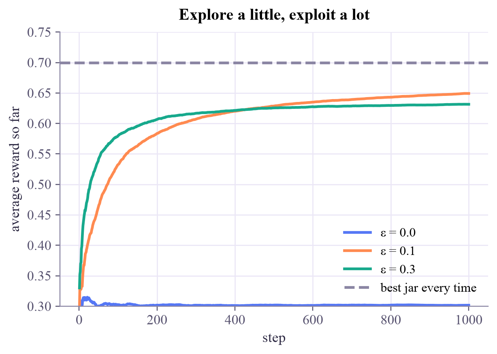

estimated chances: [0.31 0.48 0.33 0.7 ] true chances: [0.3 0.55 0.45 0.7 ] times each jar was opened: [ 36 21 30 913] average reward: 0.672
Machine Learning
 about 12 min
about 12 min ml-w7d2.ipynb
ml-w7d2.ipynb
Explore or exploit: bandits
No answers, only rewards. The first dilemma of every learner: try something new, or stick with what works?
In this lesson you will
- Describe the reinforcement-learning loop: action, reward, update
- Estimate action values by averaging rewards
- Balance exploration and exploitation with ε-greedy, and measure regret
Warm-up
1 minLunch in a new city

You've just moved to a new city. There are four lunch places near your lab. You tried one and it was fine. Do you go back every day, or keep trying the others in case one is wonderful? Every learner faces this question, from you to robots to a quantum lab tuning an experiment. Today it gets RL's simplest setting: one state, a few actions, and rewards.
Big idea
4 minAct, get rewarded, update
Yesterday's MDP had many states. A multi-armed bandit has just one: the agent repeatedly chooses an action, and gets a reward. Nobody ever says which action would have been best; the agent must find out by trying.
The name comes from slot machines ("one-armed bandits"). Ours has four cookie jars, each giving a good cookie (reward 1) with a hidden probability. The agent keeps an estimate of each jar's value, the average reward it has seen from that jar:
(That's just a running average, written as "nudge the old estimate towards the new reward".) Then the dilemma:
Exploit
Open the jar with the best estimate so far. Good now, but you might never discover a better jar.
Explore
Try another jar to improve your estimates. Costs you now, may pay off later.
ε-greedy is the simplest compromise: with probability pick a random jar, otherwise pick the best one. Good agents are judged by their regret, the reward they missed compared with always choosing the best jar. Smarter strategies explore where they are still unsure: UCB (upper confidence bound) picks the jar whose value could still be highest,
where counts how often jar was opened: rarely tried jars get a big bonus, well-known ones almost none.
Every learner must trade earning now (exploit) against learning for later (explore); a little exploration, aimed where you're unsure, goes a long way.
Play
5 minThe cookie jars
First play yourself: click jars to open them and see what you get. Your estimates appear under each jar. Then let the robot play with ε-greedy, and finally reveal the true chances.
Try this
Run the robot with ε = 0 several times (press New jars in between): it often gets stuck on a mediocre jar forever. Then try ε = 0.1 and ε = 0.5. Which one finds the best jar most reliably, and which one wastes the most cookies?
Code
3 minA bandit in NumPy
The notebook for this lessonEvery code cell below, with what it printed, is in
ml-w7d2.ipynb. To change the code and run it yourself, open the notebook in Google Colab (free, in your browser) or download it for your own Jupyter.import numpy as np
import matplotlib.pyplot as plt
true_chance = np.array([0.30, 0.55, 0.45, 0.70]) # hidden from the agent!
def open_jar(jar, rng):
return float(rng.random() < true_chance[jar]) # reward: 1 for a good cookie, 0 for a burnt one
def epsilon_greedy(epsilon, steps=1000, seed=0):
rng = np.random.default_rng(seed)
estimate = np.zeros(4) # our guess of each jar's chance
count = np.zeros(4) # how often we opened each jar
rewards = []
for t in range(steps):
if rng.random() < epsilon:
jar = int(rng.integers(4)) # explore: try a random jar
else:
jar = int(np.argmax(estimate)) # exploit: open the best jar so far
r = open_jar(jar, rng)
count[jar] += 1
estimate[jar] += (r - estimate[jar]) / count[jar] # running average
rewards.append(r)
return np.array(rewards), estimate, count
rewards, estimate, count = epsilon_greedy(epsilon=0.1)
print("estimated chances:", estimate.round(2), " true chances:", true_chance)
print("times each jar was opened:", count.astype(int))
print("average reward:", rewards.mean().round(3))What it printed in the notebook
steps = np.arange(1, 1001)
for eps in [0.0, 0.1, 0.3]:
curves = np.array([np.cumsum(epsilon_greedy(eps, 1000, seed)[0]) / steps for seed in range(200)])
plt.plot(steps, curves.mean(axis=0), label=f"ε = {eps}")
plt.axhline(true_chance.max(), ls="--", color="#8a85a3", label="best jar every time")
plt.xlabel("step")
plt.ylabel("average reward so far")
plt.ylim(0.3, 0.75)
plt.legend()
plt.title("Explore a little, exploit a lot")
plt.show()What it printed in the notebook

best_total = 1000 * true_chance.max()
for eps in [0.0, 0.1, 0.3]:
total = np.mean([epsilon_greedy(eps, 1000, seed)[0].sum() for seed in range(200)])
print(f"ε = {eps}: average cookies {total:5.1f} regret {best_total - total:5.1f}")What it printed in the notebook
ε = 0.0: average cookies 301.6 regret 398.4 ε = 0.1: average cookies 649.2 regret 50.8 ε = 0.3: average cookies 631.5 regret 68.5
Your turn
2 minYour turn: UCB
Write the UCB agent and compare its regret with ε-greedy. Does a bigger bonus help or hurt?
def ucb(c, steps=1000, seed=0):
rng = np.random.default_rng(seed)
estimate, count, rewards = np.zeros(4), np.zeros(4), []
for t in range(steps):
jar = t % 4 # TODO: open each jar once (t < 4), then argmax of estimate + c * sqrt(log(t) / count)
r = open_jar(jar, rng)
count[jar] += 1
estimate[jar] += (r - estimate[jar]) / count[jar]
rewards.append(r)
return np.array(rewards), estimate, count
for name, run in [("eps-greedy 0.1", lambda s: epsilon_greedy(0.1, 1000, s)), ("UCB c = 0.5", lambda s: ucb(0.5, 1000, s))]:
print(name, "regret", round(best_total - np.mean([run(s)[0].sum() for s in range(200)]), 1))Need a hint?
For : jar = int(np.argmax(estimate + c * np.sqrt(np.log(t) / count))). Opening every jar once first makes sure no count is zero.
Show a solution
def ucb(c, steps=1000, seed=0):
rng = np.random.default_rng(seed)
estimate, count, rewards = np.zeros(4), np.zeros(4), []
for t in range(steps):
if t < 4:
jar = t # try every jar once
else:
jar = int(np.argmax(estimate + c * np.sqrt(np.log(t) / count)))
r = open_jar(jar, rng)
count[jar] += 1
estimate[jar] += (r - estimate[jar]) / count[jar]
rewards.append(r)
return np.array(rewards), estimate, count
for name, run in [("eps-greedy, eps = 0.1", lambda s: epsilon_greedy(0.1, 1000, s)),
("UCB, c = 0.5", lambda s: ucb(0.5, 1000, s)),
("UCB, c = 2", lambda s: ucb(2.0, 1000, s))]:
print(f"{name:22s} average regret {best_total - np.mean([run(s)[0].sum() for s in range(200)]):5.1f}")
print("A modest bonus explores only where it's still unsure; too big a bonus keeps exploring for too long.")What it printed in the notebook
eps-greedy, eps = 0.1 average regret 50.8 UCB, c = 0.5 average regret 16.5 UCB, c = 2 average regret 93.6 A modest bonus explores only where it's still unsure; too big a bonus keeps exploring for too long.
Check yourself
1 minQuick check
Question 1 of 3
What does an RL agent receive after each action?
Question 2 of 3
Why can a purely greedy agent () do badly?
Question 3 of 3
Regret measures…
Wrap-up
1 minToday in one sentence
Quantum link
Quantum labs face bandit problems all the time: which of several pulse shapes, or circuit layouts, gives the highest fidelity, when each try costs precious machine time and every result is a noisy estimate from shots? Bandit algorithms help spend that budget wisely.
Go deeper (optional)
Sutton and Barto, Reinforcement Learning: An Introduction, chapter 2 (multi-armed bandits), compares ε-greedy, optimistic starting values and UCB on a 10-armed testbed.
Next in Machine Learning: back to many states, and the equation that ties all their values together.

That's the lesson!
Tap the button to save it. Short and steady wins.
Marked by mistake? Undo